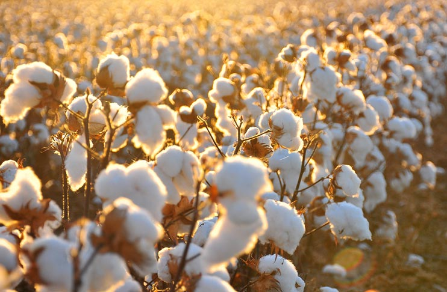

Pamuk: Beyaz Altın

Adana'nın Çukurova Tarlalarından Tişörte Uzanan Yolculuk
Merhaba küçük çiftçi! Ben Pamukcuk — Adana'nın bereketli Çukurova tarlalarında büyüyen bir pamuk tohumuyum. 🌱
Benimle birlikte tohum ekiminden başlayıp, çıkrıkta iplik büküp, dikiş makinesiyle tişört dikene kadar tüm yolculuğu yaşayacaksın!